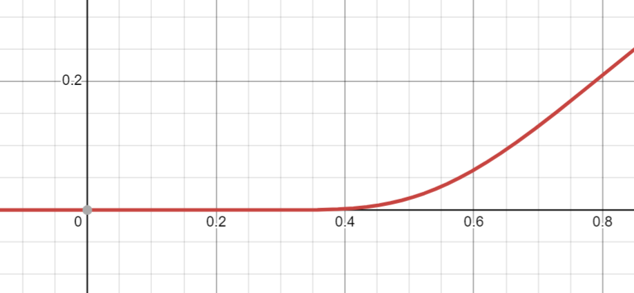

2023
Определение: Пусть \(f(x) \subset C^{\infty}(B(x_0))\). Ряд \(\displaystyle \sum_{n = 0}^{\infty}\frac{f^{(n)}(x_0)}{n!}(x - x_0)^n\) - ряд Тейлора функции \(f(x)\).
\[f(x) = \begin{cases} e^{-\frac{1}{x^2}}, x \ne 0\\ 0, x = 0 \end{cases} \,\,\,\,\,\,\,\,\,\,\,\, g(x) \equiv 0\]
\[\displaystyle \sum_{n = 0}^{\infty}\frac{f^{(n)}(0)}{n!}x^n = \displaystyle \sum_{n = 0}^{\infty}0\cdot x^n = \displaystyle \sum_{n = 0}^{\infty}\frac{g^{(n)}(0)}{n!}x^n\]

Теорема: Пусть \(\displaystyle \sum_{n = 0}^{\infty}a_nx^n = f(x)\) в \(B(0)\). Тогда \(a_n = \frac{f^{(n)}(0)}{n!}\), то есть \(\displaystyle \sum_{n = 0}^{\infty}\frac{f^{(n)}(0)}{n!}x^n\) ряд Тейлора функции \(f(x)\).
Доказательство: Сумма степенного ряда бесконечно дифференцируема в интервале сходимости \(\,\,\,\,\blacksquare\)
Теорема: Пусть \(f(x) \in C^{\infty}(B(0))\) и \([-\delta, \delta] \subset B(0)\). Если \(\exists A > 0 \,\,\,\, \forall x \in [-\delta, \delta]\,\,\,\, \forall n \in \mathbb{N} \,\,\,\, |f^{(n)}(x)| < A^n\), то при \(x \in [-\delta, \delta] \,\,\,\, \displaystyle \sum_{n = 0}^{\infty}\frac{f^{(n)}(0)}{n!}x^n = f(x)\).
Доказательство: Оценим остаток формулы Тейлора:
\[\left|f(x) - \displaystyle \sum_{n = 0}^{N}\frac{f^{(n)}(0)}{n!}x^n\right| = \left|\frac{f^{(N + 1)}(\xi)}{(N + 1)!}x^{N + 1}\right| \leqslant \frac{A^{N + 1}\cdot \delta^{N + 1}}{(N + 1)!}\overset{N \to \infty}{\to} 0 \,\,\,\,\blacksquare\]
Определение: Пара \(\left(\{u_n\}_{n = 1}^{\infty}, \{\Pi_n = \displaystyle \prod_{k = 1}^{n}u_k\}_{n = 1}^{\infty}\right)\) - бесконечное произведение.
Обозначается: \(\displaystyle \prod_{n = 1}^{\infty}u_n\)
Если \(\exists \displaystyle \lim_{n\to \infty}\Pi_n = 0\), то бесконечное произведение \(\displaystyle \prod_{n = 1}^{\infty}u_n\) расходится к нулю.
Если \(\exists \displaystyle \lim_{n\to \infty}\Pi_n \ne 0\), то бесконечное произведение \(\displaystyle \prod_{n = 1}^{\infty}u_n\) сходится.
Если \(\not\exists \displaystyle \lim_{n\to \infty}\Pi_n\), то бесконечное произведение \(\displaystyle \prod_{n = 1}^{\infty}u_n\) расходится.
Утверждение: Если \(\exists u_n = 0\), то бесконечное произведение \(\displaystyle \prod_{n = 1}^{\infty}u_n\) расходится к нулю.
Доказательство: \(\,\,\,\,\blacksquare\)
Далее \(u_n > 0\).
Утверждение: (необходимое условие сходимости) Если \(\displaystyle \prod_{n = 1}^{\infty}u_n\) сходится, то \(\displaystyle \lim_{n\to \infty}\Pi_n = 1\).
Доказательство: Поделить два соседних частичных произведения \(\,\,\,\,\blacksquare\)
Далее \(u_n = 1 + a_n\), где \(a_n > -1\) и выполнено необходимое условие.
Теорема: \(\displaystyle \prod_{n = 1}^{\infty}(1+a_n)\) сходится \(\iff\) \(\displaystyle \sum_{n = 1}^{\infty}\ln(1+ a_n)\) сходится.
Доказательство: \(\,\,\,\,\blacksquare\)
Определение: \(\displaystyle \prod_{n = 1}^{\infty}(1+a_n)\) сходится абсолютно, если \(\displaystyle \sum_{n = 1}^{\infty}\ln(1+ a_n)\) сходится абсолютно.
Теорема: \(\displaystyle \prod_{n = 1}^{\infty}(1+a_n)\) сходится абсолютно \(\iff \displaystyle \sum_{n = 1}^{\infty}a_n\) сходится абсолютно.
Доказательство: Признак сравнения \(\,\,\,\,\blacksquare\)
Теорема: Рассмотрим \(\displaystyle \prod_{i = 0}^{\infty}(1+ a_n)\). Если \(\displaystyle \sum_{n = 1}^{\infty}a_n\) сходится, то \(\displaystyle \prod_{i = 0}^{\infty}(1+ a_n)\) сходится или расходится одновременно с \(\displaystyle \sum_{n = 1}^{\infty}a_n^2\).
Доказательство: \(\ln(1 + a_n) - a_n \sim -\frac{a_n^2}{2} \,\,\,\,\blacksquare\)
Рассмотрим \(\zeta(s) = \displaystyle \sum_{n = 1}^{\infty}\frac{1}{n^s}, \,\,\,\, s > 1\).
Определение: \(\zeta(s)\) - Дзета-функция Римана.
Пусть \(p_n = 2, 3, 5\) - простые числа.
Рассмотрим \(\displaystyle \prod_{i = 1}^{\infty}\left(1 - \frac1{p_n^s}\right)^{-1} = \displaystyle \lim_{n\to \infty}\displaystyle \prod_{i = 1}^{N}\left(1 - \frac1{p_n^s}\right)^{-1}\).
\(\prod_{i = 1}^{N}\left(1 - \frac1{p_n^s}\right)^{-1} = \prod_{i = 1}^{N}\left(\displaystyle \sum_{k = 0}^{\infty}\frac1{p_n^{sk}}\right)^{-1}\).
Пусть \(N_1\) максимальное такое, что в произведении \(\prod_{i = 1}^{N}\left(\displaystyle \sum_{k = 0}^{\infty}\frac1{p_n^{sk}}\right)^{-1}\) что-то выполнено. ?
\[\displaystyle \sum_{m = 1}^{N_1}\frac1{m^s} < \prod_{i = 1}^{N}\left(1 - \frac1{p_n^s}\right)^{-1} < \displaystyle \sum_{m = 1}^{\infty}\frac1{m^s}\]
\[\Downarrow\]
При \(s > 1 \,\,\,\, \displaystyle \sum_{n = 1}^{\infty}\frac1{n^s} = \displaystyle \prod_{k = 1}^{\infty}\left(1 - \frac1{p_k^s}\right)^{-1}\).
\[\left|\displaystyle \prod_{k = 1}^{n}(1 + a_k) - 1\right| \leqslant \displaystyle \prod_{k = 1}^{n}(1 + |a_k|) - 1\]
Доказательство: База: \(|a_1| = (1 + |a_1|) - 1\).
Шаг: \(\left|\displaystyle \prod_{k = 1}^{n + 1}(1 + a_k) - 1\right| = \left|\displaystyle \prod_{k = 1}^{n + 1}(1 + a_k) - \displaystyle \prod_{k = 1}^{n}(1 + a_k) + \displaystyle \prod_{k = 1}^{n}(1 + a_k) - 1\right|\leqslant\) \(\leqslant \left|\displaystyle \prod_{k = 1}^{n}(1 + a_k)\cdot a_{n + 1}\right| + \left|\displaystyle \prod_{k = 1}^{n}(1 + a_k) - 1\right| \leqslant \displaystyle \prod_{k = 1}^{n}(1 + a_k)\cdot |a_{n + 1}| + \displaystyle \prod_{k = 1}^{n}(1 + |a_k|) - 1 \,\,\,\,\blacksquare\)
Теорема: \(\forall x \ne \pi k, k \in \mathbb{Z}\) верно:
\[\sin x = x\cdot \displaystyle \prod_{k = 1}^{\infty}\left(1 - \frac{x^2}{\pi^2 k^2}\right)\]
Доказательство: \(\exists\{P_n(y)\}_{n = 0}^{\infty}\) - последовательность многочленов, такая, что \(\sin(2n + 1)t = (2n + 1)\sin t \cdot P_n(\sin^2 t)\).
Докажем по индукции. \(P_0 = 1\). Имеем при \(n = 0 \,\,\,\, \sin t = \sin t\). При \(n = 1 \,\,\,\, \sin 3t = 3\sin t - 4 \sin^3 t = 3\sin t \left(1 - \frac43 \sin^2 t\right)\).
\(\sin(2n + 1)t + \sin (2n - 3)t = 2\sin(2n - 1)t \cdot \cos 2t\).
\(\sin (2n - 1)t\) и \(\sin (2n - 3)\) заменяем по предположению индукции. Имеем
\(\sin(2n + 1)t = 2(2n - 1)\sin t P_{n - 1}(\sin^2 t)\cdot (1 - 2\sin^2 t) - (2n - 3)\sin t P_{n - 2}(\sin^2 t)\). Индукция окончена.
\(\sin (2n + 1)t = 0\) при \(t = \frac{\pi k}{2n + 1}, \,\,\,\, k \in \mathbb{Z} \implies P_n(\sin^2 t) = 0\) при \(t = \frac{\pi k}{2n + 1}, \,\,\,\, k \in \{1, \ldots, n\}\), то есть \(P_n(y) = 0\) при \(y = \sin^2\frac{\pi k}{2n + 1}, \,\,\,\, k \in \{1, \ldots, n\}\), так как \(n\) степень многочлена - это все корни. Следовательно \(P_n(y) = A\cdot \displaystyle \prod_{k = 1}^{n}\left(1 - \frac{y}{\sin^2\frac{\pi k}{2n + 1}}\right)\).
\(\frac{\sin(2n + 1)t}{(2n + 1)\sin t} = P_n(\sin^2 t)\) при \(t \to 0 \,\,\,\, 1 = 1 \implies A = 1\).
\(\frac{\sin(2n + 1)t}{(2n + 1)\sin t} = \displaystyle \prod_{k = 1}^{n}(1 - \frac{\sin^2 t}{\sin^2\frac{\pi k}{2n + 1}}) \implies \frac{\sin x}{(2n + 1)\sin \frac{x}{2n + 1}} = \displaystyle \prod_{k = 1}^{n}\left(1 - \frac{\sin^2 \frac{x}{2n + 1}}{\sin^2\frac{\pi k}{2n + 1}}\right)\)
\[\displaystyle \prod_{k = 1}^{n}\left(1 - \frac{\sin^2 \frac{x}{2n + 1}}{\sin^2\frac{\pi k}{2n + 1}}\right) \overset{\forall x \in \mathbb{R}, \,\,\,\, x \ne \pi k \,\,\,\, |x| < 2n + 1}{\underset{m \in \mathbb{N}, \,\,\,\, m < n}{=}} \displaystyle \prod_{k = 1}^{m}\left(1 - \frac{\sin^2 \frac{x}{2n + 1}}{\sin^2\frac{\pi k}{2n + 1}}\right)\cdot \displaystyle \prod_{k = m + 1}^{n}\left(1 - \frac{\sin^2 \frac{x}{2n + 1}}{\sin^2\frac{\pi k}{2n + 1}}\right)=\] \[= \displaystyle \prod_{k = 1}^{m}\left(1 - \frac{\sin^2 \frac{x}{2n + 1}}{\sin^2\frac{\pi k}{2n + 1}}\right)\cdot P_{n, m}(x)\]
\(\left|P_{n, m}(x) - 1\right| \leqslant \displaystyle \prod_{k = m + 1}^{n}\left(1 - \frac{\sin^2 \frac{x}{2n + 1}}{\sin^2\frac{\pi k}{2n + 1}}\right) - 1 \leqslant \displaystyle \prod_{k = m + 1}^{n}\left(1 + \frac{x^2}{4k^2}\right) - 1\), так как при \(x \in [0, \frac{\pi}2]\,\,\,\,\frac2{\pi}x \leqslant \sin x \leqslant x\).
Разделили на две части каждая из которых зависит от \(n\) в одном параметре, а следовательно можно устремлять \(n \to \infty\).
\[\frac{\sin x}{(2n + 1)\sin \frac{x}{2n + 1}} = \displaystyle \prod_{k = 1}^{n}\left(1 - \frac{\sin^2 \frac{x}{2n + 1}}{\sin^2\frac{\pi k}{2n + 1}}\right)\cdot P_{n, m}(x)\]
\[\displaystyle \lim_{n\to \infty}\displaystyle \prod_{k = 1}^{n}\left(1 - \frac{\sin^2 \frac{x}{2n + 1}}{\sin^2\frac{\pi k}{2n + 1}}\right) = \displaystyle \prod_{k = m + 1}^{n}\left(1 + \frac{x^2}{4k^2}\right)\]
Устремляем \(m \to \infty\).
\[\exists \displaystyle \lim_{n\to \infty}P_{n, m} = P_m \overset{m \to \infty}{\to} 1 \,\,\,\,\blacksquare\]
Следствие: (формула Валлиса) Подставить в разложение \(x = \frac{\pi}2\).
Доказательство: \(\,\,\,\,\blacksquare\)